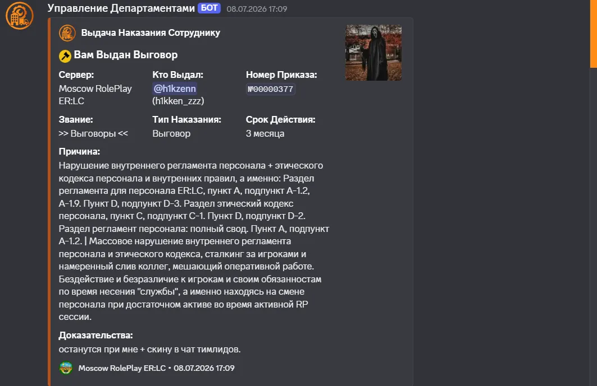
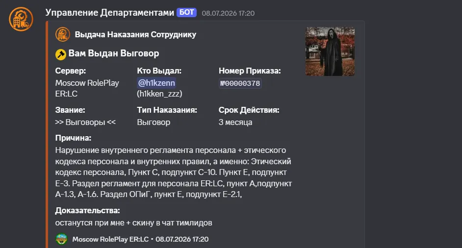
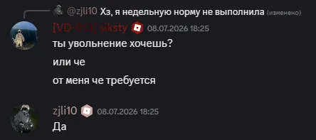
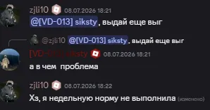
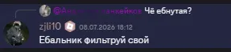
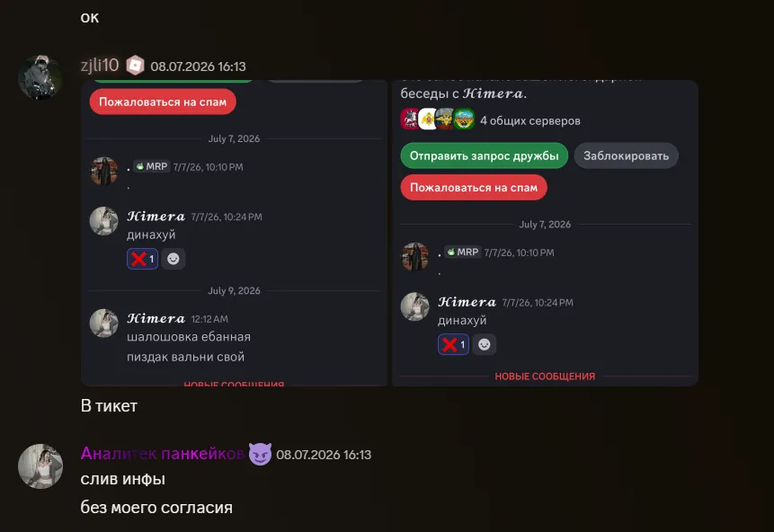
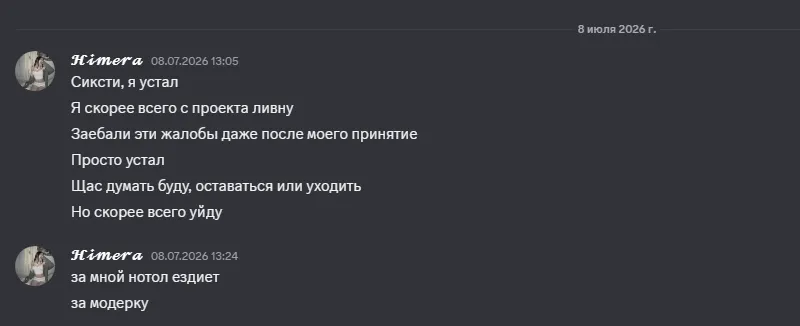
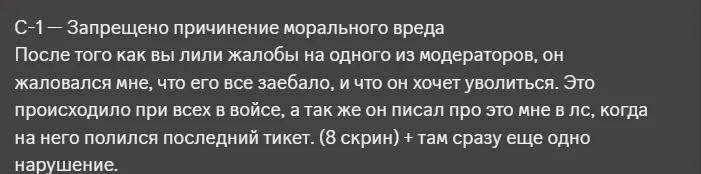

Новый Тикет — Поддержка В чём проблема: хочу увидеть док-ва за что мне выдавали выговоры
Ожидайте ответа от персонала.
а именно

2 дня не прошло еще имею право запросить

еще вотА-1.3 А-1.6 Регламента персонала ER:LC желательно предоставьте прям видео / скрины оскорблений и т.дИ как вдшки допустили такого огромного списка нарушений у пробного модератора не говоря о том что он нарушил какой либо пунктПриветствую, тикет передан данному сотруднику персоналаh1kzennИ как вдшки допустили такого огромного списка нарушений у пробного модератора не говоря о том что онНа данном наказании указан другой никнейм в роблоксеnotol44Могу тот аккаунт привязатьВы сейчас просто пытаетесь уйти от ответа.С ролями персонала был привязан этот дискорд аккаунтМогу тот аккаунт привязатьспасибо хорошотикет был переданкакие ко мне вопросы




грубое нарушение еще[пусто]Тогда была провокация[пусто]Это тут при чем?[пусто]Это тут при чем?вам какая разница за что было наказание[пусто]Тут даесли вы ушли псжпсж у вас без восстановленияХочу узнатьпсж у вас без восстановленияЧто мне мешает опять заявку создать?узнавать надо было перед увольнениемузнавать надо было перед увольнениемПокажите этот пунктЧто мне мешает опять заявку создать?кто сказал что вас примут?https://cdn.discordapp.com/attachments/1433201348282814665/1437398192357511208/image.gif
Покажите этот пункткакой пункткто сказал что вас примут?Это к чему?когда вас сняли у вас все преды/выговоры были сняты автоматическипотому что вы ушли из персоналакакой пунктО том что нужно до увольнения узнавать за что выговорыО том что нужно до увольнения узнавать за что выговорыБез тупых вопросовЯ получила их я хочу узнать за чтоЯ объяснил все выше
Тикет взят bjmajgda.
ВсеПрекратили балаган. у вас остались вопросы?<@1477996552327925831> у вас остались вопросы?Нет, но моя проблема не решена.Нет, но моя проблема не решена.И какая ваша проблема?И какая ваша проблема?За что мне выдали 2 выговораДо увольненияИ почему мне отвечают вообще кураторы фракций ладно еще бимаджи он манаджемент но люди которые не относятся че тут делаютДок-ва можно увидеть?h1kzennЗдесь нужны доказательства по 2 выговорамИ как вдшки допустили такого огромного списка нарушений у пробного модератора не говоря о том что онИ даже если эти все нарушения были то этот вопрос еще актуаленИ даже если эти все нарушения были то этот вопрос еще актуаленУ вас некорректно сформулированный вопросЗдесь нужны доказательства по 2 выговорамкуда скидыватьсюда[пусто]И так, давайте разбираться в ситуации. 1-й выговор. А-1.3 - Некорректное поведение Жалобы на своих "колег" лились ПОСТОЯННО, и лились систематически с целью их задушить. Это является некорректным поведением, которое мешало стабильной работе. D-3 — Патрули города Данный пункт регламента персонала ЗАПРЕЩАЕТ вам бездействовать на смене, но с вашей же стороны я наблюдал при достаточно большом активе фулл инактив даже смотря по логам. По логам вы посмотрели за одним игроком, выдали варн, и больше за час ни-че-го. Я не про варны, а про то что никаких команд ;view с другими игроками, дабы следить за игровым процессом. C-1 — Запрещено причинение морального вреда После того как вы лили жалобы на одного из модераторов, он жаловался мне, что его все заебало, и что он хочет уволиться. Это происходило при всех в войсе, а так же он писал про это мне в лс, когда на него полился последний тикет. (8 скрин) + там сразу еще одно нарушение.

A-1.9 — Использование полномочий в личных целях Конкретнее, катались за игроком "подозревая его в чем то", когда он просто ехал мимо. На вопрос в чем же вы его подозревали - ответа не последовало. Со стороны складывается пазл, когда вы льете беспрерывные тикеты на одного и того же модератора, пытаясь задушить его, а после начинаете кататься по пятам за ним.запись щас одну обрежу
Использование служебного транспорта, статуса и рабочего времени не для поддержания порядка, а для личной слежки за игроком
A-1.2 — Вмешательство в RP-процесс. Если из-за её слежки игрок не мог спокойно кататься или выполнять свои RP-действия, это считается прямым вмешательством.
Кодекс Этики, D-2 — Неуважение к свободе личности игрокаПерсонал должен вмешиваться в свободу игрока только в рамках правил. Беспричинное преследование нарушает это право.Кодекс Этики, C-1 — Причинение морального вреда. Слежка за игроком вызывает дискомфорт, стресс и портит игровой процесс. Это моральный вред, нанесённый уже не как коллеге, а как игроку.D-3 - Патрули города. В регламенте четко сказано "Патруль осуществляется на служебном транспорте по городу и проблемным точкам". Кататься за одним игроком - это не патруль, а преследованиеа именнос первым вроде все, если что то не пропустил.приступаем ко второму.половину док-в уже скинули по второму выговору.Правильно подметил главный куратор. Слив личной переписки, В КАКОМ либо формате, так же является нарушением NDA, что уже вплоть до снятия. А если делать полный разбор, то. Основной раздел, A-1.6 — Халатность и неадекватное поведение Слив переписок - это неадекватное поведение, несовместимое со статусом модератора.Кодекс Этики, пункт E-4 — Недопустимость негативных высказываний и дискредитации "Персонал не имеет права допускать негативные высказывания о своих коллегах и их работе в присутствии игроков. Недопустимы попытки укрепить собственный авторитет путем дискредитации коллег". Если она сливает личные переписки коллег с целью выставить их в плохом свете или посмеяться над ними — это прямая дискредитация и подрыв авторитета команды.Кодекс Этики Персонала, пункт C-10 — Неразглашение информации (NDA). "Всем сотрудникам Персонала категорически запрещено разглашать внутреннюю информацию, переписки, решения Персонала, технические детали (NDA)" Внутренние переписки между модераторами являются конфиденциальной информацией. Выкладывая их на публику или пересылая третьим лицам без согласия участников - грубое нарушение политики конфиденциальности.A-1.3 — Некорректное поведение. В служебном чате это выглядит как агрессия, провокация и переход на личности. Модератор обязан решать конфликты через руководство, а не устраивать "разборки" матом в общем канале. A-1.6 — Оскорбления сотрудников Фраза содержит нецензурный подтекст и оскорбительную форму обращения к коллеге. Это прямое попадание. Кодекс Этики, E-3 — Недопустимость оскорбительной критики "Критика в адрес коллеги должна быть аргументированной и неоскорбительной. Критике подлежат профессиональные действия, но не личность коллег"D-3 - Патрули города. В регламенте четко сказано "Патруль осуществляется на служебном транспорте помаксимум это было 3 минуты и как вы сказали что я ему мешала выполнять РП действия как же я ему мешала?а и да, спрашиваю при всехпрямая провокация быламаксимум это было 3 минуты и как вы сказали что я ему мешала выполнять РП действия как же я ему мешау вас же есть микрофон?у вас же есть микрофон?нет, и это я отметила в анкетенет, и это я отметила в анкетеэто уже снятиебез каких либо обговоровя без понятия как вас взяли на данную должность если вы не имеете микрофон.я вас мог сразу снять уже за это.я без понятия как вас взяли на данную должность если вы не имеете микрофон.тот кто принимал анкету это прекрасно виделмаксимум это было 3 минуты и как вы сказали что я ему мешала выполнять РП действия как же я ему мешане важно сколько вы катались, сам факт что был сталкинг. Намеренное преследование игрока. РП "действий" не было, шел РП "Процесс", который затрагивает ВСЕХ игроков 24\7 начиная от начала сессии и до ее окончания. И вы без каких либо обоснований не можете взять и начать за игроком кататься.прямая провокация былаэто можно было залить так же как и вы и делали раньше, просто написав тикети он бы получил наказание.не важно сколько вы катались, сам факт что был сталкинг. Намеренное преследование игрока. РП "действможет он ехал на ограбление мне откуда знать тем более их фракцию уже давно за дисбалансом наблюдалида пускай хоть повешается мне то что он сам нарушал и сливал приватный чат

может он ехал на ограбление мне откуда знать тем более их фракцию уже давно за дисбалансом наблюдаликакое ограбление. Вы иметь должны обоснованные основания что бы за ним следить. В смысле "откуда мне знать". Тем более у нас правила НЕ ЗАПРЕЩАЮТ грабить.я могу так же щас зайти в игру, и начать кататься пол часа за игроком"ну а вдруг ограбит что-то"какое ограбление. Вы иметь должны обоснованные основания что бы за ним следить. В смысле "откуда мнезапрешают 1 грабитьда пускай хоть повешается мне то что он сам нарушал и сливал приватный чаттак вы так же слили с ним перепискучто так же является нарушением NDAя могу так же щас зайти в игру, и начать кататься пол часа за игроком3 минуты из часа выделилаесли бы вы скинули скрин в тикет, окно не в приватный чат где 10 модеров других сидят3 минуты из часа выделилаеще раз повторяю, без разницы какое время вы каталисьсам факт что это былосам факт что это было без оснований обоснованных по правиламно не в приватный чат где 10 модеров других сидята то есть вы считаете нормально сливать приватный чат где возможно была бы конф. информацияи сам факт что это было сделано намеренно"подозрения были на него кое какие, вдруг ограбит че"а то есть вы считаете нормально сливать приватный чат где возможно была бы конф. информациятак его снялипотом он провел беседу с кем то тами его как то там вернулитак его снялипотом он как то восстановилсяи то, через сутки снова снялипотом он как то восстановилсяно вас как пробного модератора это затрагивать не должнокак, что, и гдеу вас есть круг ваших обязанностей и круг ваших правна основе которых вы работаетеу вас есть круг ваших обязанностей и круг ваших права как вы допустили что я пробный модератор нарушила столько правилзапрешают 1 грабитьтак он может ехал к своим друзьям. И вообще я не понимаю, при чем здесь ограбление, если игрок ехал от дома жилого к трассевариантов исхода сотни что он может сделатьа как вы допустили что я пробный модератор нарушила столько правиля допустил?ко мне притензии пошли?я занимался своими делами, увидел у вас нарушение, выдал своевременно вам наказаниея могу тикет закрывать?иначе пошла дискуссиябесмысленнаябыли запросы предоставить док-вы, я предоставил и разъяснил все в деталях, потом начались оправдания. Теперь пошли обвиненияпишите тикет тогд на меня как вы делали раннеечто я занимаюсь не темне слежу за вами 24\7ко мне притензии пошли?вы как ВД и тимлид должны были проконтролировать пробного модератора на нарушениявы как ВД и тимлид должны были проконтролировать пробного модератора на нарушенияя не обязан следить за вами 24\7, и в обязанностях у меня нету слежки за модерацией 24\7. Меня при обзвоне не закрепляли за вами.еще раз повторяю, мне игрок в личке начал жаловаться на угнетение со стороны другого модератора, я обратил внимание, провел внутреннее раследование и увидел кучу нарушений, выдал наказания имея на то основания и доказательства.какие ко мне на данный момент притензии.где я говорила о том что вы 24/7 должны следить мне просто интересно как ВД и тимлид персонала мог допустить такого что пробный модератор допустил столько ошибок?где я говорила о том что вы 24/7 должны следить мне просто интересно как ВД и тимлид персонала мог дну исходя из сообщений "как вы могли допустить столько нарушений", ко мне идет притензия, на которую я отвечаю, что времени у меня нету, следить за вами 24\7 я не обязан, и отвечать могу по тикетам. Помимо меня есть еще около 7 сотрудников кто за вами так же "обязан" следить и не допускать ваши нарушенияи какие конкретно нарушения я допустил.за все нарушения я сразу же выдал наказания.еще раз повторяю, мне игрок в личке начал жаловаться на угнетение со стороны другого модератора, я одаже если я его угнетала что ему мешало не нарушать правила? тем более был 1-2 тикета 2 не помню но 1 о сливе приватного чатамаксимум, провел внутрнеее раследование и выявил факт неактивности на сменах и слив персонала.где я сливала персонал?даже если я его угнетала что ему мешало не нарушать правила? тем более был 1-2 тикета 2 не помню но его право нарушать правила или нет, как и ваше. Просто те кто не нарушают, сидят на своем месте. А те кто нарушают, так же пишут тикет поддержки и пытаются оправдатьсягде я сливала персонал?я же выше объяснялпоследний раз при всех предупреждаюесли продолжается бесмысленная дискуссия, на которую я уже по факту отвечать и не должен, я просто закрываю тикет как решенныйего право нарушать правила или нет, как и ваше. Просто те кто не нарушают, сидят на своем месте. А твы хотите сказать что я примерно за 4 дня ничего не сделала? вы просто обесценили труд.вы хотите сказать что я примерно за 4 дня ничего не сделала? вы просто обесценили труд.кто вам сказал за 4 днявы на смене за порядком должны следитьпрописывать view за игрокамиотвечать на мод колыпомогать новичкамотслеживать по скинам американцевviewэто основная команда по которой вы работаетеследите за РП процессом.с вашей стороны по логам я не видел что бы вы следили за РП процессом.за что соответственно выдал наказание.это основная команда по которой вы работаетеэто ни где не было написано что основаня команда виев + я ее не всегда юзаю потому что езжу на машине и смотрю за РП процессом выслеживая по карте сотрудников полиции или шерифов и если были бы РП сцены я за ними наблюдалас вашей стороны по логам я не видел что бы вы следили за РП процессом.следить за РП процессом не обязательно в :viewследить за РП процессом не обязательно в :viewили покажите определенный пункт который говорит о том что обязательно именно в :viewу нас каждый сотрудник прописывает view, и таким образом следит за РП процессом. Если вы изобрели велосипед и поехали на нем, ну не наши проблемы.про то что нигде не прописанохорошохорошодавайте представимчто 1 пункт из выговора мы убираем про viewостальные че и как15+ пунктов нарушенныхпро угнетание вы сами сказали право нарушать или нет я увидела нарушение и написала в тикет а не в приватный чаттам уже ваше дело что делать проводить беседу выдавать что либо я к этому не притрагиваласьbjmajgdaдок-вы я предоставилвсе объясниля больше не нужен?про то что вам писали что хотят из за меня уволиться опять же я подавала жалобы только на существующие нарушенияладно, закрывайте тикет


 Новый Тикет — Поддержка
Новый Тикет — Поддержка Ожидайте ответа от персонала.
Ожидайте ответа от персонала. Тикет взят
Тикет взят  Тикет закроется через несколько секунд...
Тикет закроется через несколько секунд...